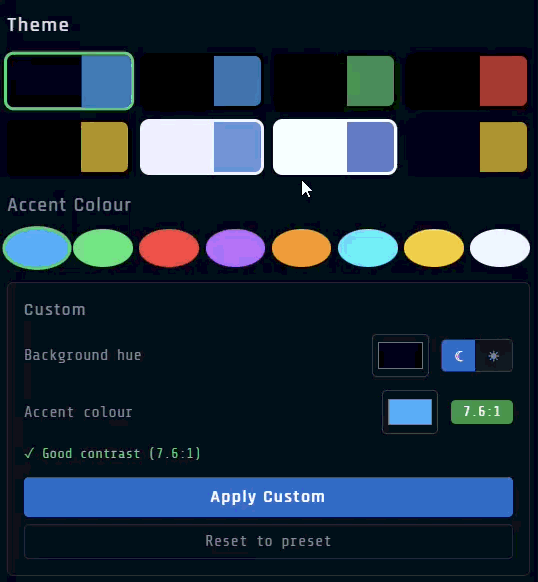
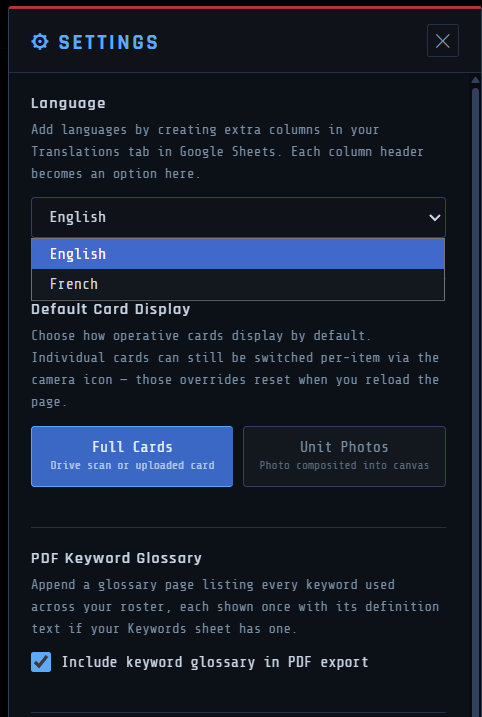
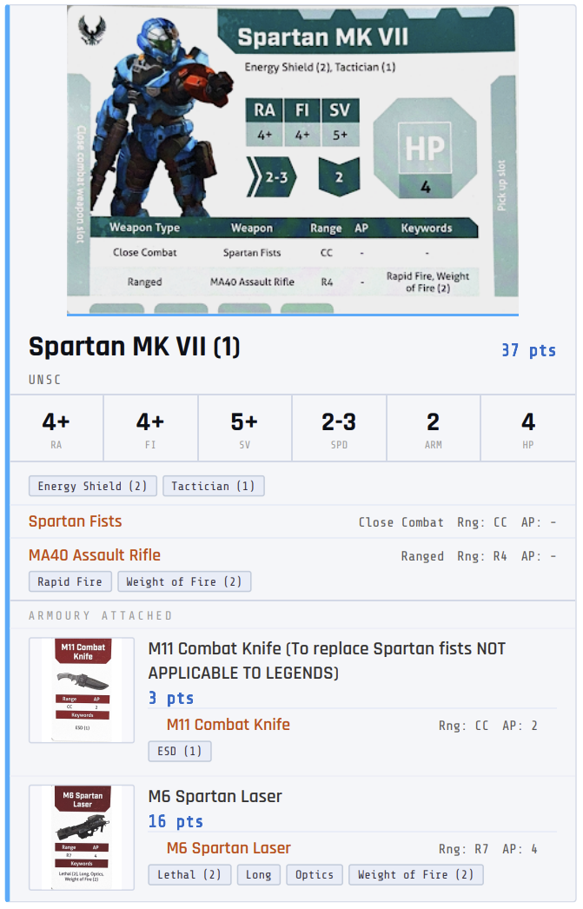

Build lists the way the cards actually work
Browse every Character, Weapon, Armoury item, and Special Order from your Sheet, with full stat cards, keyword definitions on hover, and live points tracking as you build.
- Keyword badges show their full rules text on hover — no flipping between a rulebook and the app
- Live points bar updates as you add and remove items, always showing your remaining budget against your chosen limit

Equip weapons, grenades, and items the way the game actually works
Armoury items aren't just added to a flat list — they attach directly onto a specific character, the same way you'd equip them on the table. The app enforces the rules as you go: weapon caps, grenade limits, item limits, Legend restrictions, and faction eligibility are all checked at the point of assignment.
- Choose which character receives each weapon or item from a picker that shows your full current roster
- Each character card in your roster shows what's attached to them, not just a combined pile
- Rule violations are flagged immediately with a specific error — not silently allowed through

Full card art or unit portrait — your choice
Switch between two display modes at any time, either globally from Settings or per card using the camera icon on each entry.
- Full Card view — shows the complete scanned or uploaded card image, stats and all
- Portrait / Photo mode — a cleaner unit photo composited into the card frame; upload a photo of your own painted miniature and it replaces the generic art
- Per-card overrides let you mix modes in the same roster — useful if you have painted photos for some models but not others
- Overrides reset on page reload; the global default set in Settings persists

Find anything across your entire card database instantly
The browse panel has a full filtering system so you're never scrolling through hundreds of entries to find one card.
- Search by name — type any part of a card's name and the list filters live as you type
- Filter by keyword — search across all operatives for cards that carry a specific keyword (e.g. find every character with Energy Shield or Flight)
- Filter by stat — narrow characters by RA, FI, SV, Speed, Armour, or HP to find units that meet a threshold
- Filter weapons by stat — search for weapons by Range or AP across the full armoury
- Filters can be combined — search by name within a keyword filter, for example
- Faction, Detachment, and Type filters layer on top of the search

Star the units you always reach for
Star any character or item as a Favourite and filter the browse list down to just your starred entries with one tap — useful once your Sheet has a lot of entries and you keep returning to the same core units.
- Stars persist across sessions
- Works alongside the search and filter system — you can search within Faves only
- Toggle back to All at any time without losing your starred selections

Standard, Big Team Battle — or your own custom ruleset
Toggle Competitive Mode to get automatic faction locking, detachment validation, and point-limit enforcement. Choose Standard (200pts) or Big Team Battle (450pts) — or build a fully custom ruleset.
- Set your own points limit, Legend max, Special Orders min/max, and weapon/item/grenade caps per character and per roster
- Export your custom ruleset as a file, or share it as a link with your playgroup
- A live validity check tells you exactly what's wrong, if anything, before you head to the table

Make it yours — customise colours globally and per faction
The app ships with a default dark theme, but every colour is adjustable from Settings. Set the overall background and accent colours to match your group's preferences, or assign distinct colours to each faction so they're visually distinct at a glance.
- Global background, panel, border, and accent colour controls
- Per-faction colour assignment — each faction gets its own highlight colour used throughout the UI
- Changes apply instantly with no reload
- Settings are saved locally and persist across sessions

Never lose a list by accident
Before loading a different roster, importing a file, or clearing your list, the app automatically snapshots what you had — so an accidental overwrite is always recoverable.
- Up to 15 automatic snapshots, each timestamped with what triggered it
- One-click restore, which is itself reversible

See exactly what changed between two lists
Load two rosters side by side — from a saved cloud roster or a JSON file on either side — and get a real diff: units added, removed, or with a changed loadout, plus the points difference.

Add it to your home screen — and keep using it if signal drops
Install it as an app on your phone or desktop for quick access with no browser bar. Load it once while you have signal, and it'll keep working for the rest of that session even if you lose connection — handy at a venue with patchy wifi. A built-in Health Check also scans your Sheet for the most common setup mistakes before they become a problem mid-game.
*The catch: this only lasts for the current session — don't close or reload the app while offline, or you'll need signal again to reopen it. A Settings option lets you preload every card image in advance so browsing works fully offline too, not just the app shell.

English and French out of the box — and any language you add
The entire app ships fully translated in both English and French: every button, label, error message, modal, and PDF export string. No partial translations, no mixed-language UI.
- Switch language at any time from Settings — the app updates instantly with no reload
- Add any additional language by creating a new column in the Translations tab of your Google Sheet — no code changes required, and no redeployment needed
- Each column header you add becomes a selectable option in Settings automatically
- PDF exports, roster printouts, and the keyword glossary all respect the active language

Clean printouts and PDF export
Export your roster as a polished PDF with full card art, or a fast black-and-white printout for the table. Optionally append a keyword glossary so you never need a separate rules reference.
